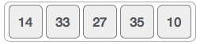
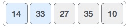
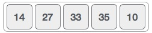

Bubble sort is a simple sorting algorithm. This sorting algorithm is comparison based algorithm in which each pair of adjacent elements is compared and elements are swapped if they are not in order. This algorithm is not suitable for large data sets as its average and worst case complexity are of O(n2) where n are no. of items.
We take an unsorted array for our example. Bubble sort take Ο(n2) time so we're keeping short and precise.
Bubble sort starts with very first two elements, comparing them to check which one is greater.
In this case, value 33 is greater than 14, so it is already in sorted locations. Next, we compare 33 with 27.

We find that 27 is smaller than 33 and these two values must be swapped.
The new array should look like this −
Next we compare 33 and 35. We find that both are in already sorted positions.

Then we move to next two values, 35 and 10.

We know than 10 is smaller 35. Hence they are not sorted.

We swap these values. We find that we reach at the end of the array. After one iteration the array should look like this −

To be precise, we are now showing that how array should look like after each iteration. After second iteration, it should look like this −

Notice that after each iteration, at least one value moves at the end.
And when there's no swap required, bubble sorts learns that array is completely sorted.

Now we should look into some practical aspects of bubble sort.
We assume list is an array of n elements. We further assume that swap function, swaps the values of given array elements.
begin BubbleSort(list)
for all elements of list
if list[i] > list[i+1]
swap(list[i], list[i+1])
end if
end for
return list
end BubbleSort
We observe in algorithm that Bubble Sort compares each pair of array element unless the whole array is completely sorted ascending. This may cause few complexity issues like what if the array needs no more swapping as all the elements are already ascending.
To ease-out the issue, we use one flag variable swapped which will help us to see if any swap is happened or not. If no swap is occurred, i.e. the array requires no more processing to be sorted, it will come out of the loop.
Pseudocode of BubbleSort algorithm can be written as given below −
procedure bubbleSort( list : array of items )
loop = list.count;
for i = 0 to loop-1 do:
swapped = false
for j = 0 to loop-1 do:
/* compare the adjacent elements */
if list[j] > list[j+1] then
/* swap them */
swap( list[j], list[j+1] )
swapped = true
end if
end for
/*if no number was swapped that means
array is sorted now, break the loop.*/
if(not swapped) then
break
end if
end for
end procedure return list
One more issue we did not address in our original algorithm and its improvised pseudocode, that is, after every iteration the highest values settles down at the end of the array. So next iteration needs not to include already sorted elements. For this purpose, in our implementation, we restrict the inner loop to avoid already sorted values.
To see bubble sort implementation in C programming language, please click here.